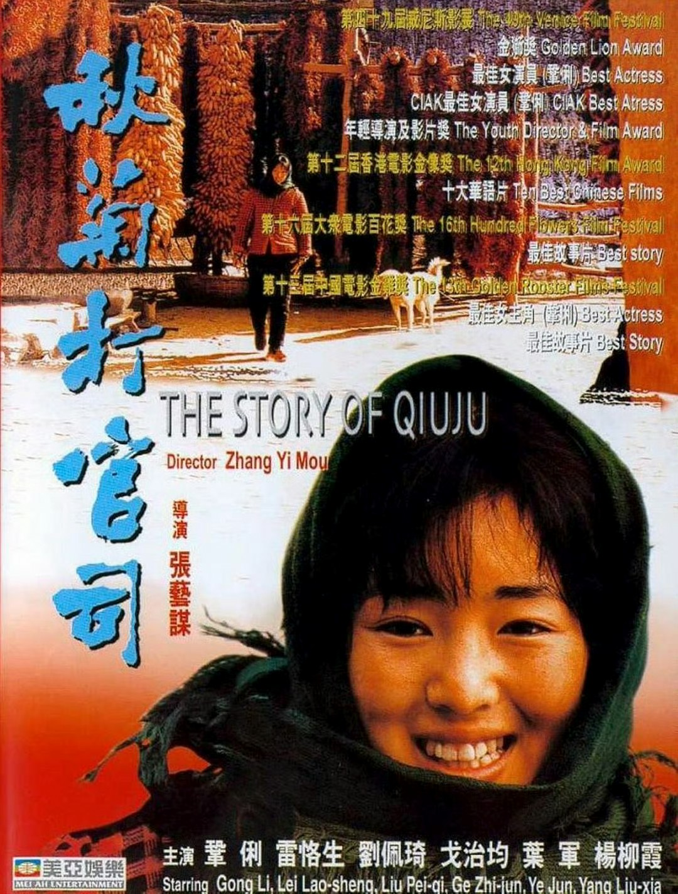
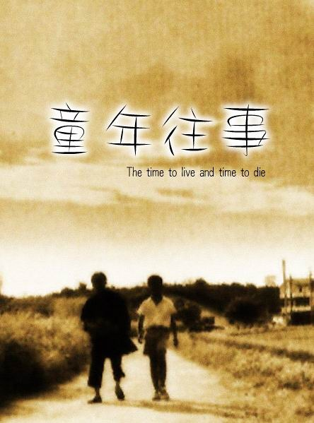
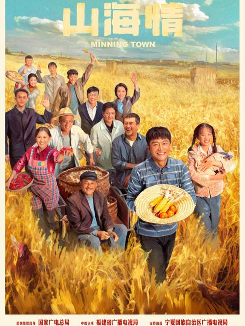

数据新闻大赛
中国方言叙事的破圈传播与国际表达
以《给阿嬷的情书》为核心样本
百余年前，侨批是漂在南洋风浪里的家书，一头牵着异乡的风霜，一头系着故土的守望。百余年后，一部讲着潮汕方言的电影，成了新的"侨批"——它载着同样的牵挂与信义，裹着橄榄菜的烟火气，从潮汕古寨的石板桥出发，漂向更广阔的世界。
《给阿嬷的情书》的出现，像一声温柔却有力的回响，打破了两重固有偏见：方言电影从来不是只能圈地自萌的小众品类，本土故事也不必削足适履才能走向国际。
本研究整合可溯源的公开数据，梳理七大方言区的银幕叙事脉络，试图回答两个问题：一句沾着泥土气的乡音，如何从巷陌走进千万人的心里？一个扎根本土的中国故事，如何被世界温柔听懂？
从闽南语的温情到官话区的辽阔，一方乡音养一方光影
一封侨批，半生守候。从潮汕古寨走向世界，19亿票房验证了在地叙事的世界性力量。
醒狮鼓点撞着地道粤音，岭南少年的热血与乡土底色愈发醇厚。
温软乡音铺展富春山水间的家族四季，一卷江南烟火长卷。

硬朗陕音立住西北农村的执拗坦荡，威尼斯金狮奖开山之作。

侯孝贤的客家乡音，平淡日常深处是几代人共有的深沉乡愁。
湘潭乡音诉说普通家庭的聚散羁绊，湖湘乡土的温润质感。

地道固原话演绎扶贫史诗，方言正剧破圈出海的典型样本。
从潮汕三城超前点映到19亿现象级票房，一封侨批的逆袭之路
4月27日
潮汕三城点映，本土口碑初步发酵
破1000万
5月9日
口碑持续扩散，排片占比稳步攀升
累计1亿
5月16日
单日票房突破1亿，贡献大盘74%
累计4亿
5月24日
2026春节档后首部破10亿国产片
累计10亿
5月31日
登顶影史五一档冠军，斩获5月月冠
累计14亿
6月
密钥多次延期，长线放映热度不减
累计19亿
数据来源：猫眼专业版、灯塔专业版 · 统计截止 2026年6月
从票房走势到口碑传播，数据勾勒出一条"口口相传"驱动的逆袭曲线
数据来源：猫眼专业版、灯塔专业版
数据来源：各平台公开数据汇总
数据来源：片方官方公告
数据来源：官方微博路演公开内容分析
4大洲 · 17个国家与地区 —— 一封潮汕家书的全球旅程
为什么《给阿嬷的情书》能打破方言叙事的双重边界？
| 创作维度 | 工业化商业片常规路径 | 《给阿嬷的情书》创作路径 |
|---|---|---|
| 剧本开发 | 快速编剧、IP改编 | 半年田野调研 + 300个真实家庭原型 + 十万字生活指南 |
| 演员选择 | 流量明星/职业演员优先 | 素人为主，以性格与角色贴合度为第一标准 |
| 叙事风格 | 强冲突、强煽情、强配乐 | 克制平淡，以日常细节承载浓烈情感 |
| 文化表达 | 泛华语通用内容，弱化地域特征 | 全程潮汕方言，深度还原侨批文化与潮汕风土 |
在地文化里的普世共鸣——观众不必听懂每一句潮汕话，就能在阿嬷的眼神里想起自己的长辈。
反工业化叙事的朴素力量——没有程式化的表演技巧，只有从生活里长出来的真实质感。
从巷陌到全国的口碑扩散——从潮汕本土点映出发，经全省扩散、全国发酵，最终全民共情。
→ 情感穿透了方言壁垒，普世亲情才是核心驱动力。
数据来源：灯塔专业版、澎湃新闻、新浪财经
→ "真实感"转化为了"高分口碑"。
数据来源：澎湃新闻、新华网、豆瓣公开数据、猫眼专业版
→ 影片靠观众"自来水"完成了从巷陌到全国的传播。
数据来源：猫眼专业版、灯塔专业版、新华网、21世纪经济报道
量化数据 × 对比逻辑 —— 拆解"土味"乡音的破圈密码
用七项数据量化"土味"浓度——不是"方言猎奇"，而是极致的真实。
95%方言 + 90%以上真实原型 + 300个家庭 + 120位老人 + 全素人 + 9个月选角 —— 共同构成"土味"的量化定义：不是"方言猎奇"，而是极致的真实。
用三组观众数据证明接受度——从国内破圈到海外验证，数据说明一切。
如果方言是障碍，非潮汕观众不会从10%涨到50%以上；如果方言是障碍，新加坡观众不会把4800张票1.5小时抢光——数据证明：方言不仅未成壁垒，反而成为情感记忆的载体。
用对比逻辑证明——核心吸引力是"普世亲情"，而非"方言猎奇"。
观众应集中在潮汕本地，非潮汕观众不会持续增长。
非潮汕观众从10%→45%→50%+；非粤区域票房占比65%——北方观众、西南观众同样买单。
海外非潮汕华人不会产生共鸣，更不用说完全不懂中文的外国观众。
新加坡观众："讲的就是我们祖辈下南洋的故事"；华裔导演王国燊二刷："我至少哭了5次"；马来西亚旅游局副主席带家人二刷，称影片"描述了我们华人饮水思源、注重家庭的思想"。新加坡官方公告支持增加潮语放映场次，明确指出方言是新加坡华族文化遗产的重要组成部分。
口碑应随时间下降，评分逐步回落——这是多数"猎奇型"影片的典型走势。
豆瓣评分从开分9.0逆势三次上涨至9.3；超84万人打分；五星好评近七成（69.9%）；成为近十年来口碑最佳华语剧情片。多元群体共同托举评分一路走高。
方言是载体，不是原因。影片成功不是因为"方言猎奇"，而是因为普世亲情打破了地域和语言的界限。正如导演蓝鸿春所说："真实"是创作第一原则。胜在"以情为核"的普世叙事，而非方言本身。
七大方言区代表性作品 — 从地方叙事到跨文化流动
四句话，读懂方言叙事的破圈密码
方言从来不是传播的壁垒，而是锚定真实与深情的文化坐标。潮汕话不是需要"克服"的障碍，而是人物骨血的一部分——它让情感有了具体的纹理和温度。
很多创作者以为走向国际就要迎合他人审美、抹去本土印记。但这封"写给阿嬷的情书"告诉我们：把根扎进自己的文化土壤，把自己的故事讲好讲真，自然会有跨越山海的力量。
不必刻意输出，不必强行说教。把文化藏进人物的命运里，把情怀融在日常的细节里。它没说什么大道理，只是讲好了一段普通人的故事，就让全世界读懂了中国人的情义与坚守。
当行业还在迷信IP与流量的捷径，这部小成本、素人主演的方言片用19亿票房证明：观众的审美早已迭代，大家不再为豪华阵容买单，只为真诚的故事与滚烫的人心付费。好内容永远是硬通货。